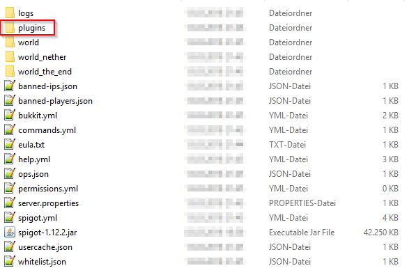
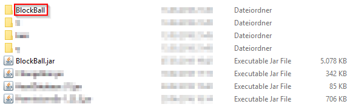
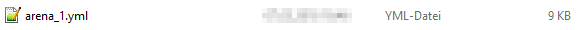
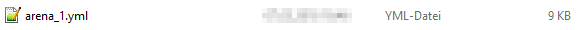

Database and Storage¶
BlockBall uses .yaml files to store meta information about your configured arenas.
Also, BlockBall uses a SQLite database per default which is the file called BlockBall.db to store stats for your players like winrate, amount of participation in games.
If you rename or delete the file it gets automatically regenerated but all of your saves are lost. So it might be useful to copy the BlockBall plugin folder from time to time in order to create backups.
One option you should consider is using a MySQL database instead of a SQLite database for stats, the advantages and how to set it up are listed here.
Editing the arena files¶
You can also edit the files directly without using the Ingame Chat-UI, however many unexpected errors can occur.
The arena files are located in the following folder (The folder and file icons may differ to your system):
  
